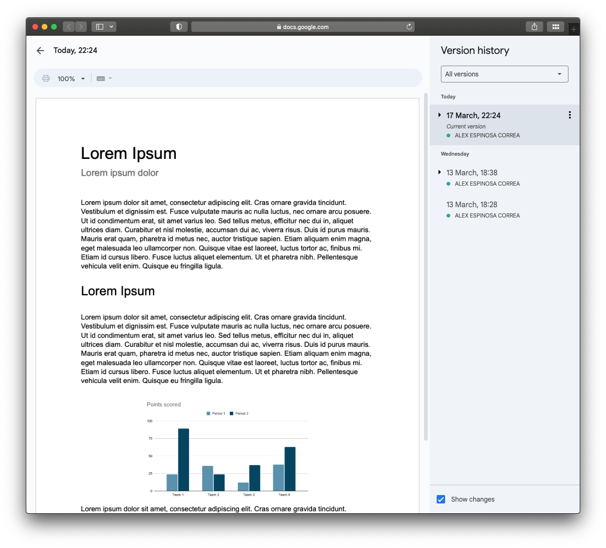

{kind=link}
15:00
Git & GitHub
Una historia conocida… y sufrida


Control de versiones
Un control de versiones es un sistema que registra los cambios realizados en un archivo o conjunto de archivos a lo largo del tiempo, de modo que puedas recuperar versiones específicas más adelante. […] en realidad puedes hacer lo mismo con casi cualquier tipo de archivo que encuentres en una computadora. Chacon (2014)
Un método básico y rudimentario del control de versiones es terner copias de un mismo archivo.
2015-11-09_package-installation.R
2016-05-21_package-installation.R
2017-09-05_package-installation.R
2018-06-29_package-installation.R
Se comienza con una versión básica y se van guardando sólo los cambios. Gonzalez et al. (2019).
Sistemas de control de versiones
Locales

Centralizados

Distribuidos

GitHub
GitHub es el mayor proveedor de alojamiento de repositorios Git, y es el punto de encuentro para que millones de desarrolladores colaboren en el desarrollo de sus proyectos. Un gran porcentaje de los repositorios Git se almacenan en GitHub, y muchos proyectos de código abierto lo utilizan para hospedar su Git, realizar su seguimiento de fallos, hacer revisiones de código y otras cosas. Chacon (2014).
Incluso para proyectos individuales privados, es una buena idea subir tu trabajo a una ubicación remota para tener tranquilidad. ¿Por qué? Porque es bastante fácil estropear tu repositorio local de Git, especialmente cuando eres nuevo en esto. La buena noticia es que a menudo solo la infraestructura de Git está estropeada. ¡Tus archivos están bien! Bryan (2018).